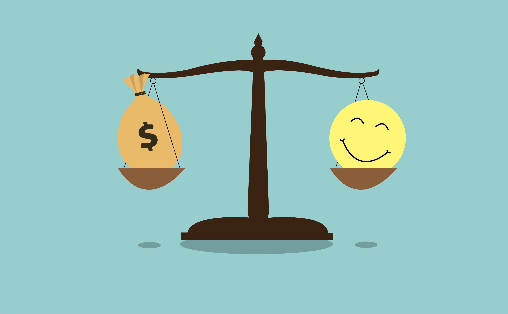
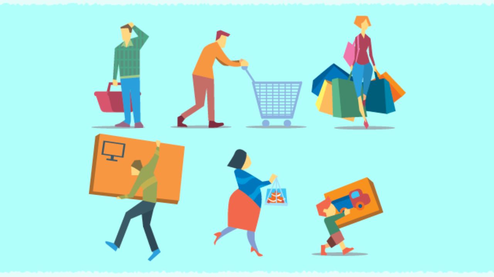

How Canadian Businesses Perceived Tariff Pressure in 2025
Exploring how Canadian businesses perceive tariff impacts
Exploring how Canadian businesses perceive tariff impacts
My experience deploying and building a web application designed to help users practise and refine their English pronunciation.

Exploring the relationship between GDP and life satisfaction across various countries.

Exploring societal trends, technological advances, and cultural shifts through language.

Exploring e-commerce customer data and identifying patterns in customer satisfaction and churn.

Investigating how LLMs generate sentence completions from ambiguous partial sentences.